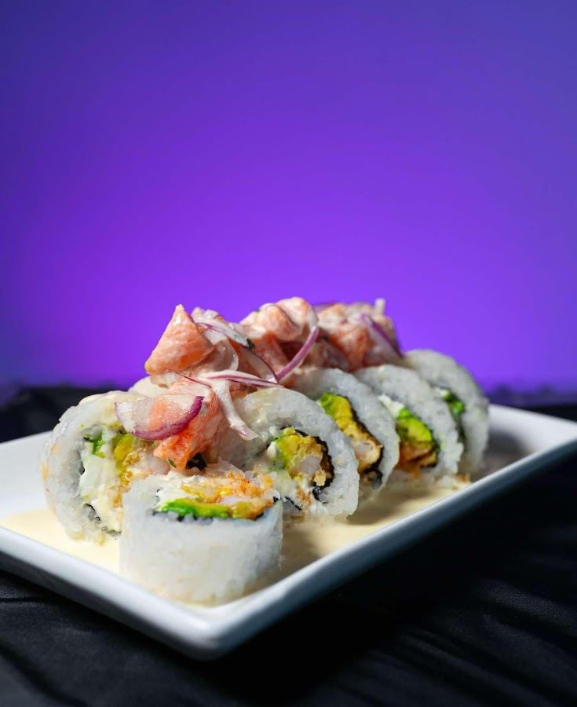
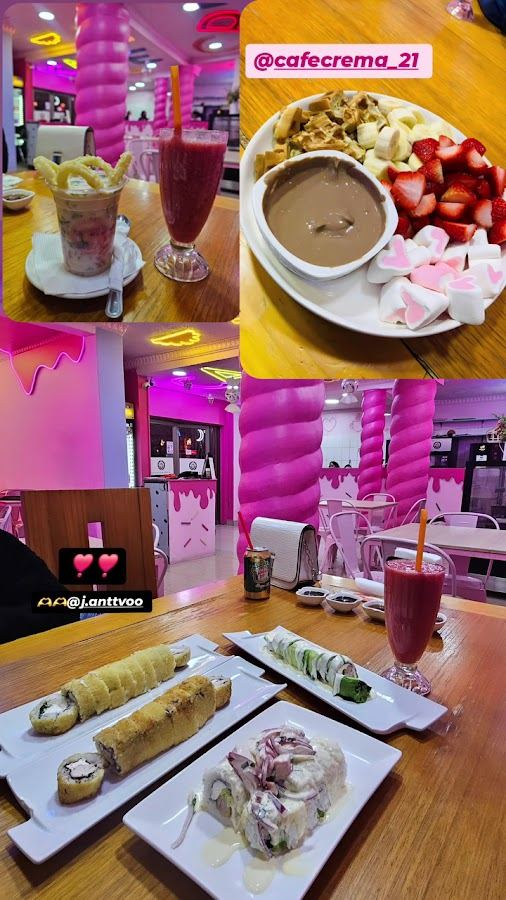

Av. El Parrón · La Cisterna · Cafetería, Sushi & Postres
La cafetería más rosa
(y sabrosa) de la comuna.
Waffles, fondues y el sushi que tiene a medio Instagram y TikTok hablando de nosotros — en una terraza que parece sacada de un cuento. 4.2★ en Google, con 458 opiniones.
Quiénes somos
Kawaii por fuera,
sushi por dentro.
Café Crema 21 se hizo famoso en redes por su terraza rosa con techo de flores y una cabina telefónica de utilería que es la foto obligada de cada visita. Pero detrás de lo instagrameable hay una carta gigante: sushi, gohan, waffles con nutella y fondues para compartir en familia.
Con 64,9 mil seguidores en Instagram y presencia activa en TikTok, es una de las cafeterías más comentadas de La Cisterna — pet-friendly, con estacionamiento gratis y pensada para pasar horas ahí.


Lo que dicen de nosotros
"Buena relación
calidad-precio y personal amable."
Así resume Google el sentir general de las 458 reseñas: sushi delicioso —especialmente los rolls acevichados—, sabrosos waffles y fondues, en un ambiente hermoso y acogedor. Algunas personas mencionan que el servicio puede ser lento en horas punta.
Lo que dicen
4.2
458 opiniones en Google Maps
"Muy rico todo. El Sushi Acevichado exquisito, mi hijo amó el waffle. No demoró en salir a pesar de que estaba lleno. Buena atención del chico y las chicas. Buenos precios."
"Lo recomiendo completamente, es de los mejores lugares que he ido. La comida es muy rica, la atención muy buena y simpática, y el lugar es súper lindo para fotos. Recomiendo el pastel de selva negra."
"10/10 la porción (para mí) contundente, buena presentación y buen sabor, el jugo XL real es grande y los mini panqueques buena porción para compartir."
Visítanos
Av. El Parrón 255.
Av. El Parrón 255
La Cisterna, Región Metropolitana
* La cocina cierra 20 min antes del horario general. Los viernes, según demanda, la cocina salada puede cerrar hasta 1 hora antes.
* Sin WhatsApp confirmado — el teléfono de arriba es la línea fija real registrada en Google Maps.